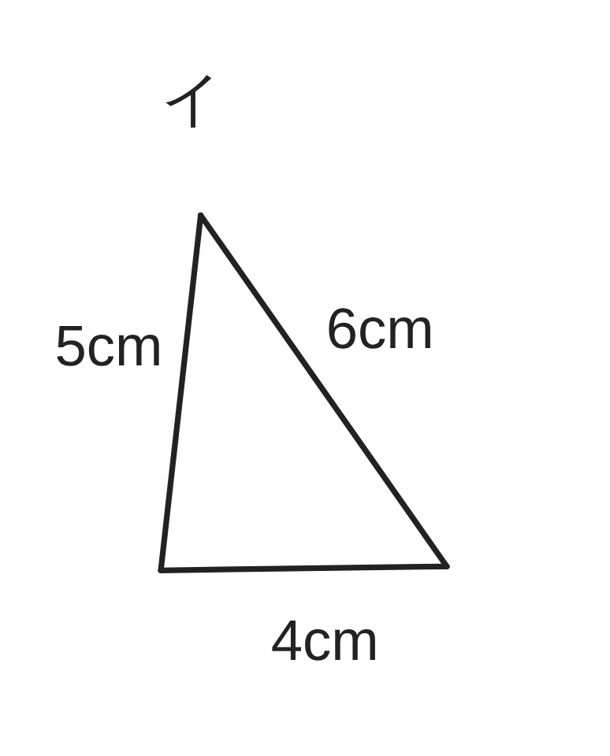
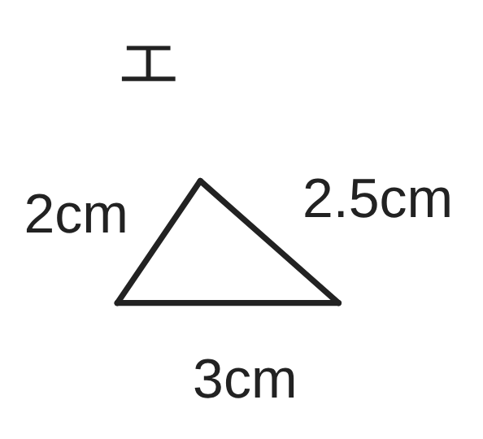
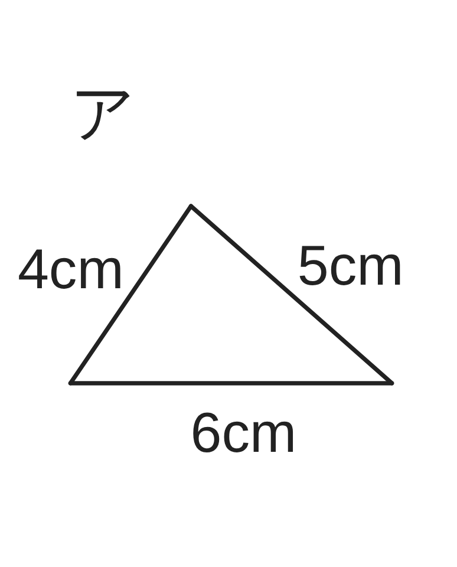
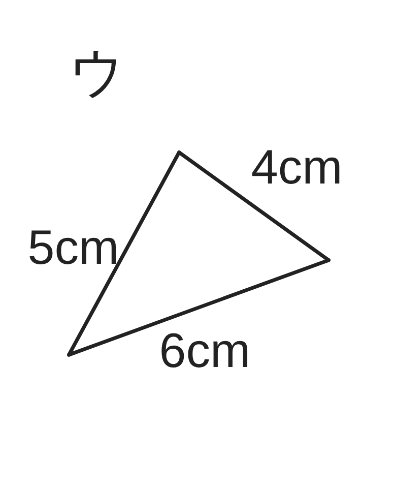
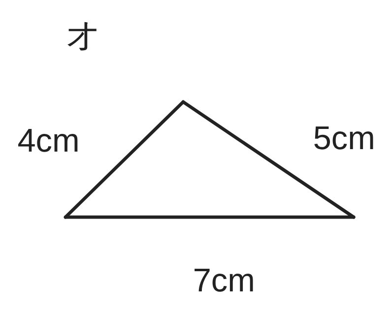
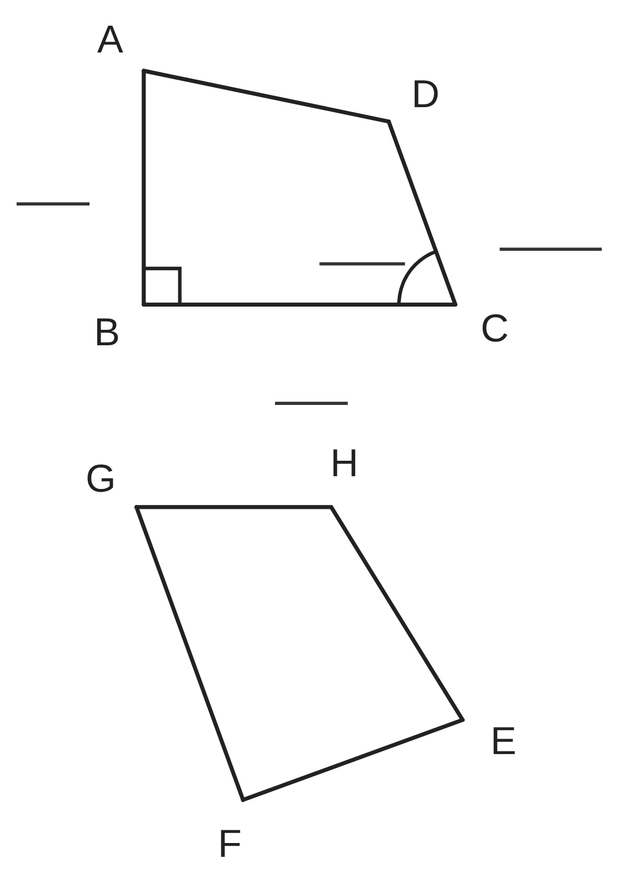
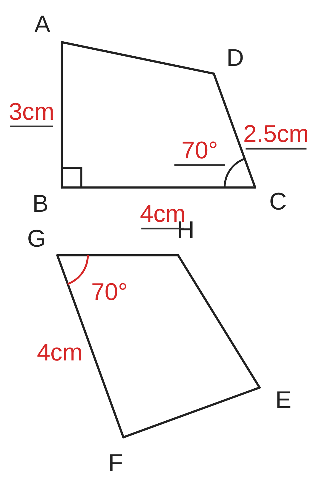
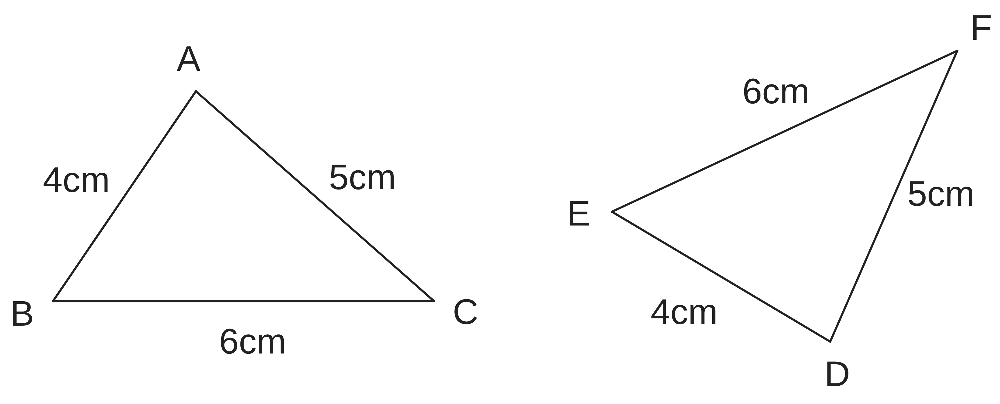

ペア学習
第8時 ぴったり重なる図形の、辺や角の関係を調べよう
前の時間の重要語句を、ペアで出し合おう
第7時の重要語句から、1人1問ずつ、言葉を選んで出題する。
聞かれた人は、その言葉の意味を、自分の言葉で言う。
補助線
平行線の性質
内角の和
外角の性質
平行と合同 第8時 ぴったり重なる図形の、辺や角の関係を調べよう
めあて
第8時 ぴったり重なる図形の、辺や角の関係を調べよう
ぴったり重なる図形の、辺や角の関係を調べよう
学習課題
下のア〜オのうち、ぴったり重ねられる（裏返してもよい）
図形の組を見つけよう。重ならない図形は、どこがちがうだろう。





平行と合同 第8時 ぴったり重なる図形の、辺や角の関係を調べよう
学習課題のまとめ
第8時 ぴったり重なる図形の、辺や角の関係を調べよう





ぴったり重なる組 … ア・イ・ウ（ウは、裏返すと重なる）
エ … 形は同じだが、大きさ（辺の長さ）がちがう。
オ … 辺の長さが 4cm・5cm・7cm で、ア〜ウとちがう。
平行と合同 第8時 ぴったり重なる図形の、辺や角の関係を調べよう
ことば
第8時 ぴったり重なる図形の、辺や角の関係を調べよう
平面上の 2つの図形が、移動して、ぴったり重なるとき、
この 2つの図形は であるという。
合同な図形で、重なり合う頂点・辺・角を、それぞれ
する頂点・辺・角という。
合同な図形では、対応する線分の は等しく、
対応する角の も等しい。
合同であることは、記号 を使って、
△ABC≡△DEF のように書く。
平行と合同 第8時 ぴったり重なる図形の、辺や角の関係を調べよう
ことば
第8時 ぴったり重なる図形の、辺や角の関係を調べよう
平面上の 2つの図形が、移動して、ぴったり重なるとき、
この 2つの図形は合同であるという。
合同な図形で、重なり合う頂点・辺・角を、それぞれ
対応する頂点・辺・角という。
合同な図形では、対応する線分の長さは等しく、
対応する角の大きさも等しい。
合同であることは、記号 ≡ を使って、
△ABC≡△DEF のように書く。
平行と合同 第8時 ぴったり重なる図形の、辺や角の関係を調べよう
例題
第8時 ぴったり重なる図形の、辺や角の関係を調べよう
右の図で、四角形 ABCD と四角形 EFGH は合同である。
AB＝ cm、BC＝ cm、CD＝ cm、
∠B＝90°、∠C＝ ° である。
（1）対応する頂点を、表に書こう。
| 頂点 | A | B | C | D |
|---|---|---|---|---|
| 対応する頂点 |
（2）辺 FG の長さ （3）∠G の大きさ
（4）合同であることを、記号 ≡ で表そう。

平行と合同 第8時 ぴったり重なる図形の、辺や角の関係を調べよう
例題 解答
第8時 ぴったり重なる図形の、辺や角の関係を調べよう
（1）対応する頂点
| 頂点 | A | B | C | D |
|---|---|---|---|---|
| 対応する頂点 | E | F | G | H |
（2）辺 FG は、辺 BC に対応するから
FG＝4cm
（3）∠G は、∠C に対応するから
∠G＝70°
（4）四角形 ABCD≡四角形 EFGH

平行と合同 第8時 ぴったり重なる図形の、辺や角の関係を調べよう
考えよう
第8時 ぴったり重なる図形の、辺や角の関係を調べよう
右の図の △ABC と △DEF は合同で、△ABC≡△DEF と書ける。
△ABC≡△EDF と書いたら、どうなるだろう。辺の長さをもとに、調べよう。

頂点 A、B、C に対応する頂点
| 頂点 | A | B | C |
|---|---|---|---|
| △ABC≡△DEF | |||
| △ABC≡△EDF |
①
頂点 A、B、C に対応する頂点を、表に書こう。
②
△ABC≡△EDF と書いたとき、辺 BC に対応する辺は、どの辺か。
その長さを図から読みとり、BC の長さとくらべよう。
③
△ABC≡△DEF と △ABC≡△EDF は、同じ意味だろうか。わけも書こう。
平行と合同 第8時 ぴったり重なる図形の、辺や角の関係を調べよう
振り返り
第8時 ぴったり重なる図形の、辺や角の関係を調べよう
今日のめあて
ぴったり重なる図形の、辺や角の関係を調べよう
合同
対応
記号 ≡
今日わかったことを、ペアで1つずつ言い合おう。
ワークシートと演習プリントを出そう。（未完成でも出す）
平行と合同 第8時 ぴったり重なる図形の、辺や角の関係を調べよう